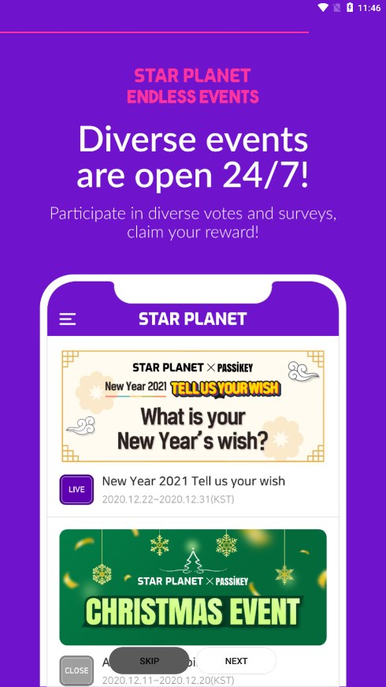

STAR PLANET 深度盘点：一款让韩国 Trot 粉丝疯狂的投票 App 到底有什么玩法
STAR PLANET 是韩国 Trot 文化圈当下最火的粉丝投票与社区应用。本文盘点它的五大能力域：本命艺人绑定、果冻经济体系、THE TROT SHOW 周播投票、常设活动问卷、跨平台账号体系，帮你判断值不值得入坑。
如果你的娱乐视野刚好扫过韩国 Trot 综艺圈，大概率听过 STAR PLANET 这个名字。它不是一款普通的追星 App——它是当前 THE TROT SHOW 这档现象级节目的官方投票通道，也是整个韩国 Trot 粉丝文化的线上集散地。但它又远不止"投票工具"这么简单：果冻经济、本命艺人锚点、社区 feed、常设活动……这套组合拳打下来，让它在短短一年多时间里攒下了百万级的日活。
今天就来做一次系统性盘点，把 STAR PLANET 能提供什么、亮点在哪、哪些场景真的用得上，一次性理清楚。想亲自体验的可以先去它的官网扫一眼，UI 做得很清爽。
粉丝身份锚点：MY STAR 机制
STAR PLANET 最聪明的产品设计，是一上来就让你绑定"本命艺人"。这个绑定不是简单的关注列表勾选——它是你的粉丝身份锚点，决定了你打开 App 之后看到的一切：
- 首页默认就是这位艺人的动态和当前投票入口
- 社区分区自动进入艺人专属 feed，刷到的都是同好帖子
- 月度榜、名人堂这些榜单页面，优先把你的本命排在前面
- 周播投票场次里，候选人列表打开时直接选中你绑定的那位
一个账号只能绑定一位，但随时能改——换本命不用注销重来，进菜单点 edit 重新选就行。改完首页和社区分区立刻切换，之前在旧艺人分区发的帖子也不会被清掉。艺人列表按性别和组合层级组织，找不到本命的话大概率是性别分类选错了（Boy 或 Girl），或者艺人挂在其他组合名下——列表会随节目播出动态更新，过几周再试说不定就出现了。
这套机制的妙处在于：它把"选本命"这件事从一个社交标签，变成了整个 App 的导航中枢。你不用在每个功能里手动筛选"只看 XX"，系统自动把你领去最关心的内容流里。
果冻经济体系：Heart Jelly 的铁则
STAR PLANET 的核心货币体系叫 Jelly，分两种：Heart Jelly（免费攒的）和 Star Jelly（充值买的）。两者能互相兑换，但有一条绝对不能踩的铁则——Heart Jelly 每月 16 日凌晨 4 点（韩国时间 KST / UTC+9）全部清零。
换算成国内时间就是每月 16 日凌晨 3 点。不管你攒了多少、什么渠道来的（广告、刮刮卡、活动奖励、甚至新号注册送的 100 个），清零时间一到统统变成 0。只有 Star Jelly 永不过期、不清零。
这条规则直接塑造了攒票节奏的游戏玩法：
- 月度 Star Ranking 在每月 1-15 日开放投票，16 日清零刚好卡在月度榜结束后，所以月度榜的 Heart Jelly 攒到 15 日投完就没浪费
- 但 THE TROT SHOW 是每周一晚 8 点（韩国时间）直播，预投票提前约 4 天开放——如果某一期直播恰好在 16 日之前，那你上周攒的 Heart Jelly 到 16 日就全没了，赶不上这场直播的投票窗口
实际操作中，资深粉丝的做法是：提前 24 小时把要投的 Heart Jelly 备足、投完，不要赌清零后的时间差。关于清零节点和跨时区换算的完整对照表，STAR PLANET文档里整理得很细致。

投票核心玩法：THE TROT SHOW 与月度榜
STAR PLANET 的投票体系分两层：
THE TROT SHOW 周播投票是硬核玩法，每周一晚直播，预投票提前约 4 天开放。直播期间还有实时投票窗口。这个投票的票数直接影响节目排名，是粉丝最投入的战场。投票用 Heart Jelly，每票消耗的果冻数量根据投票阶段可能有变化。
月度 Star Ranking 相对温和，每月 1-15 日开放，用 Heart Jelly 投票，16 日截止清零。月度榜的排名会在名人堂页面长期展示，粉丝们会在月底冲刺攒票。
两个榜单的投票都不影响对方——你可以同时在月度榜投 A 艺人、在 THE TROT SHOW 周播里投 B 艺人，没有互斥。这也解释了为什么很多粉丝绑定本命之后，还是会在其他场次手动切换候选人投票：本命只有一个，但想支持的艺人不止一个。
常设活动与问卷：轻松攒果冻的副产品
除了正式投票之外，STAR PLANET 的 Events 区还挂着一批 24 小时开放的常设活动——艺人个人的 Mini 投票（"哪张照片最好看"）、平台层面的用户偏好调查问卷、节日应援类的限时活动等。
这些活动有几个特点：
- 随时能进随时能参与，没有 THE TROT SHOW 那种严格的开放时间窗口
- 完成后 Heart Jelly 奖励立即到账，不像某些平台的任务需要 24 小时审核
- 奖励梯度清晰：小型投票 5-20 个，调查问卷 20-50 个（越长越贵），限时特殊活动 50-200 个
- 活动生命周期一般是 2 周到 1 个月，到期下架后新活动补上
重要的是：这些活动的投票不影响正式排名。它们更像"攒果冻礼包的互动小游戏"——每天刷完广告和刮刮卡之后花 2 分钟看一眼 Events，能额外拿 20-50 个 Heart Jelly，长期下来也是一笔不小的弹药。

注册与账号体系：三种通道的选择
App 的下载通道挂在它的推广站里，国内 Android 用户拿 APK 直接装就行。STAR PLANET 提供 Google、Kakao、Apple、iFree 四种登录通道。对中文用户来说，实际能用的主要是前三种：
- Google：Android 和 iOS 都支持，但国内访问 Google 需要挂 VPN，登录体验取决于你的网络条件
- Apple：iOS 用户最快最顺滑，直接调系统 Apple ID，不需要额外 App，一般不受国内网络限制
- Kakao：Android 专用，需要手机装了 KakaoTalk 且已登录——国内访问 Kakao 同样需要 VPN
- iFree：韩国本土服务，海外用户基本用不到
注册完成后必做一步：邮箱验证。系统会发邮件到你 Google/Kakao 绑定的邮箱，点验证链接才能解锁全部功能。验证邮件偶尔会进垃圾邮件箱，或者延迟 1-2 分钟，等超过 3 分钟没收到去翻垃圾箱就对了。新账号验证通过后系统一次性送 100 Heart Jelly——注意这 100 个同样受 16 日清零规则管，刚注册就要赶上 16 日附近的话，果冻还没暖热就没了。
昵称建议填有辨识度的代号（方便社区互认），而且最好一次想好——注册完成后界面里没有明显的修改入口。
短板也要说
盘点到这里，STAR PLANET 看起来很完美。但它的几个硬伤值得提前知道：
时区是命门。整个平台运行在韩国 KST，所有时间点（清零、投票开放、直播）都按这个时区走。国内用户需要自己换算，而且如果你在国外旅行、手机自动切时区，很容易搞混。没有时区设置功能是最大的设计遗憾。
国内网络依赖 VPN。Google 和 Kakao 两个主流通道的登录、以及 App 运行时的大部分网络请求，在国内直连都不通。虽然 Apple 通道的登录本身不依赖 VPN，但登录之后 App 和服务器的通信还是要走韩国节点——大部分情况下全程挂 VPN 是必须的。
Heart Jelly 的清零规则太刚性。没有任何缓期、续存、或者"清零前 24 小时提醒"——虽然官方可能通过 App 推送通知提醒，但万一你没开推送、或者忘了看，攒了两周的果冻就这么消失了。对重度玩家来说这是反人性的设计。
果冻经济的商业逻辑不透明。Heart Jelly 和 Star Jelly 可以互相兑换，但兑换比例、充值价格、是否有地区差异这些信息在 App 内并不一目了然。新用户第一次接触时很容易搞不清楚"到底要不要充钱、充多少够投一轮"。
什么样的人该用它
盘点下来，STAR PLANET 适合三类人群：
第一类：THE TROT SHOW 或月度榜有本命艺人的粉丝。这是最核心的使用场景——如果你有一个想支持的 Trot 歌手，STAR PLANET 是官方投票的唯一入口。绑定 MY STAR 之后整个 App 的内容流都围绕这位艺人展开，社区同好的帖子、投票场次的实时反馈、名人堂里的排名，一站式解决。
第二类：想低门槛围观韩国 Trot 圈但不想深度投入的轻度用户。常设活动和问卷完全可以当小游戏玩，不影响正式投票也不会因为清零损失什么——每天刷一下广告加活动参与，攒的 Heart Jelly 够投月度榜一两轮，体验一下也没压力。Apple 通道国内用户直连就能用（只要不开 Google/Kakao 相关功能），网络门槛相对低。
第三类：想研究粉丝经济产品设计的观察者。果冻经济的刚性时间压力、MY STAR 的身份锚点机制、"投票 + 社区 + 活动"的三板斧组合，都是值得拆解的设计选择。尤其是 Heart Jelly 每月清零这条铁则——在国内任何一款追星 App 里都很少见，它对用户行为的塑型效果非常显著。
不适合的人也得说清楚：完全不想挂 VPN 的纯国内用户可以跳过，因为 App 的核心功能需要访问韩国服务器才能正常运行；对 Trot 文化没有任何兴趣的泛娱乐用户，STAR PLANET 的内容流全是韩国粉丝向的东西，大概率用不上。上面盘点到的玩法细节我参考了一份整理好的完整资料，主版本放在 GitHub，国内访问不太稳定的话可以去 Gitee 或 GitCode 看镜像副本，两边和 GitHub 内容实时同步。